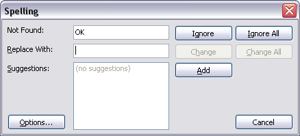
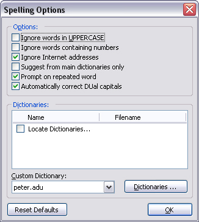

Spell checking in IniTranslator is handled by the excellent Delphi spell checker component from Addictive Software (http://www.addictivesoftware.com). To spell check a translation file (only translation files are spell checked since the original file is read-only in IniTranslator), select the "Action-Spelling" menu item (or press F7). The spell check dialog wil be displayed, already containing the first word of the currently selected translation item:

The dialog contains the following commands:

The options dialog contains settings to control how spell checking is performed and what
dictionaries should be used. Click the "Dictionaries" button to view
and edit your custom dictionaries. Click "Reset Defaults" to reset all
settings to the defaults as they were at first startup. Option settings are stored on a
per-user basis.
Note:
To be able to spell check, you will need to install at least one dictionary for the language
of the translation file you are working on. You can get free dictionaries from the Addict
homepage at http://www.addictivesoftware.com/dicts.htm.
Save the dictionaries in the \dictionaries subfolder of the IniTranslator install
folder to make them available in the spell checker.